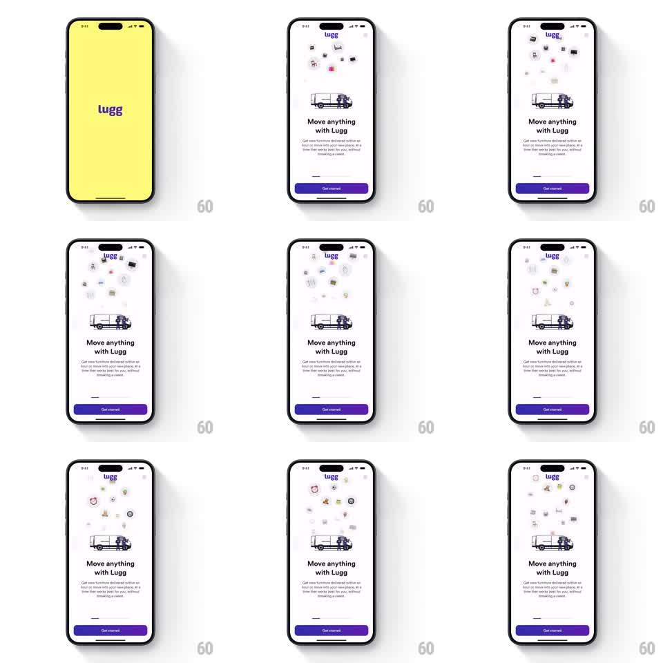

Media
Frame-by-frame

Rebuild this animation 1:1: Lugg's welcome screen - above the delivery truck illustration, a continuous fountain of small item icons (chairs, boxes, plants, frames) slides up in staggered streams and fades out, looping forever.

Rebuild this animation 1:1: Lugg's welcome screen - above the delivery truck illustration, a continuous fountain of small item icons (chairs, boxes, plants, frames) slides up in staggered streams and fades out, looping forever. ## Integration Integration: stack-agnostic spec - springs given as stiffness/damping, timed motions as duration + curve; map every value to your framework and animation library of choice. ## Scene Yellow splash with the purple "lugg" wordmark, then the white welcome screen: "lugg" logo top-center, a delivery truck illustration, "Move anything with Lugg" headline, subcopy about furniture delivery, and a purple "Get started" button. Between the logo and the truck, small household-item icons float upward in staggered columns. ## Motion spec Pattern: looping staggered icon fountain. - Splash -> content: yellow screen slides up and away (400ms, ease-in) as the white screen reveals beneath; logo, truck, headline, and button stagger in from below (60ms apart, spring ~300/22). - Icon fountain: ~10 icons across 3-4 vertical lanes above the truck; each icon rises from just above the truck (translateY 0 -> -160pt over 2.4s, ease-out), fading in over the first 20% and out over the last 25%. - Lanes are staggered (each lane offset ~600ms) and icons within a lane space ~800ms apart, so rising icons never align into rows. - Icons drift slightly sideways (+-8pt sine) and a few rotate gently (+-10deg) as they rise. - The fountain loops indefinitely; truck, headline, and button stay static. ## Calibration - Icon mix is household inventory: chair, box, plant, frame, lamp - small (~20-28pt), flat single-color style. - Density stays sparse (max ~8 live icons) so the headline remains the focus. ## Reduced motion Icons fade in a static scattered arrangement; no rising. ## Don't miss - The fountain emerges from behind/above the truck illustration - icons originate at the truck bed. - Purple brand color reserved for logo and button; icons stay muted so they don't compete.